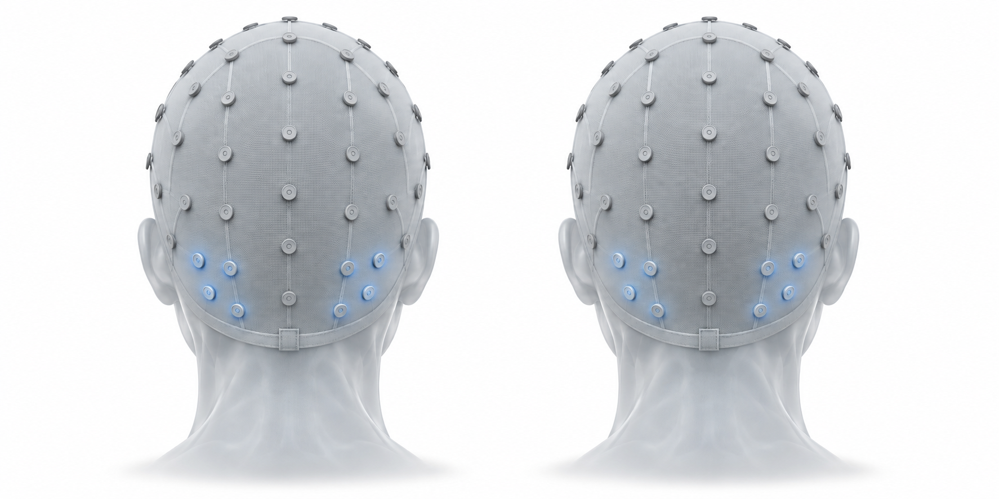
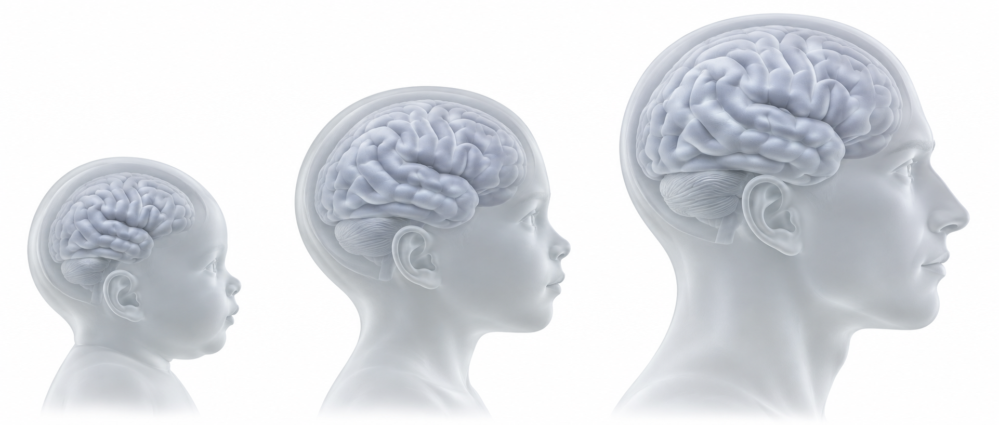
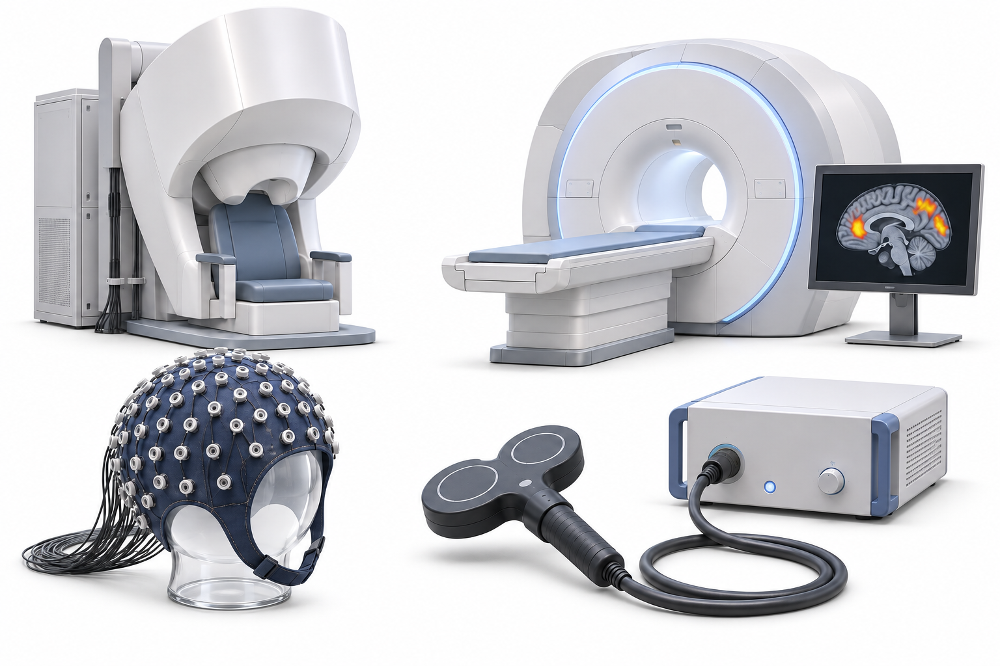

About
I'm a cognitive neuroscientist interested in how we perceive and interact with other people, and how these abilities develop across the lifespan. My research brings together questions about social perception, neurodiversity and socio-emotional well-being, from infancy to adulthood.
I'm currently a postdoctoral researcher in the Social Brain Sciences group at ETH Zürich. Previously, I worked at the Institute of Cognitive Sciences Marc Jeannerod in Lyon, where I held a Marie Skłodowska-Curie Postdoctoral Fellowship. Before Lyon, I was a postdoctoral researcher at KU Leuven. I received my PhD in Cognitive Neuroscience from KU Leuven in 2020, after studying psychology at Ghent University and undertaking a research internship at the MRC Cognition and Brain Sciences Unit in Cambridge.
To study the mechanisms behind social and visual perception, I use a range of methods including EEG, eye tracking, behavioural measures, TMS, MEG and fMRI. Outside research, I enjoy reading, trail running, skiing, swimming, cycling, and spending time with friends and family.
Research
A selection of the questions I work on. The publications page brings together papers from these and related projects.
Social perception & neurodiversity
How do we attend to and process faces and social information? I have used frequency-tagging EEG and eye tracking to study individual differences in social and face perception, including in autistic and non-autistic children (Cortex, 2020; Molecular Autism, 2020).

Seeing interactions & relations
Everyday scenes contain more than individual people and objects: they contain relationships between them. My work explores how visual cues support the rapid perception of who is doing what to whom, and how we perceive relations between objects (Journal of Experimental Psychology: General, 2025; 2026).
Social cognition across development
Studying infants offers a window into the early foundations of social understanding. With colleagues in Lyon, I investigated how infants represent the roles of participants in social events (Current Biology, 2024).

Neuroimaging & neurophysiology
I use complementary methods to investigate how the brain supports perception and social cognition. These include frequency-tagging EEG to measure the timing of neural responses, eye tracking to study visual attention, and fMRI and MEG to examine brain activity. I have also used TMS alongside muscle recordings to investigate responses to social scenes. Combining methods helps connect neural responses with perception and behaviour.

Background
Experience
- 2026 – presentPostdoctoral researcher, ETH Zürich
- 2026 – presentVisiting researcher, Klinik Lengg, Zürich
- 2021 – 2025Postdoctoral researcher and Marie Skłodowska-Curie fellow, CNRS, Lyon
- 2020 – 2021Postdoctoral researcher, KU Leuven
- 2014Visiting student, MRC Cognition and Brain Sciences Unit, Cambridge
Education
- 2015 – 2020PhD in Cognitive Neuroscience, KU Leuven
- 2010 – 2015BSc and MSc in Psychology, Ghent University (magna cum laude)